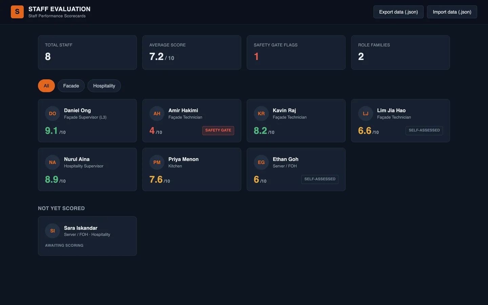
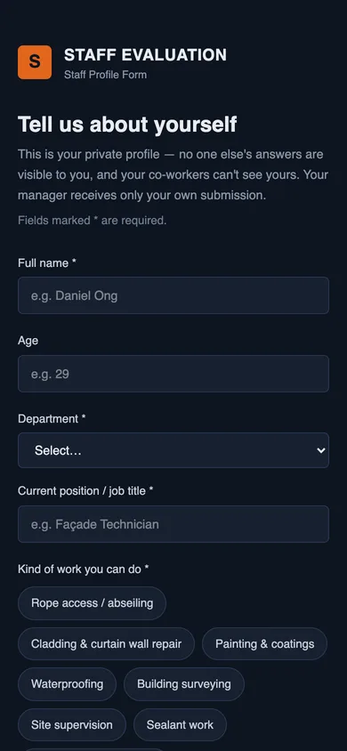

2026 · Client project · Designer and developer
Staff evaluation platform
Built for a Kuala Lumpur group that runs façade-maintenance crews and a restaurant. In use by its staff.


- Status
- In use by the company's staff
- Built with
- React, TypeScript, Postgres
- Checks
- Automated tests on the scoring rules
The problem
Reviews were done ad hoc, with no shared standard between a façade technician and a restaurant server, so scores could not be compared and a capable worker with unsafe habits could still come out well.
What I built
Weighted scorecards for each role, scored out of ten; a safety gate that caps the overall score at 4 when safety compliance falls below the threshold; a private profile form each person fills in on their phone, which scores them automatically; and an owner overview filtered by team.
Result
The platform is in use by the company's staff. Each submission goes straight into a database instead of files passed between people, and the scoring and safety-gate rules are covered by automated tests.